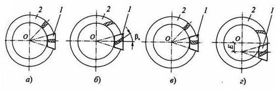
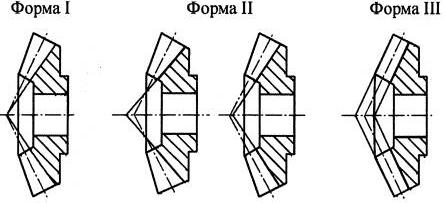
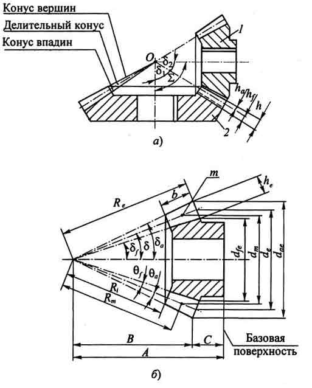

Коническая передача состоит из шестерни 1, имеющей меньшее число зубьев z1 и колеса 2 с большим числом зубьев z2, относительное движение которых можно представить как качение без скольжения друг по другу их начальных конусов (аксоидов). Линии пересечения начальных конусов и боковых поверхностей зубьев называют линиями зубьев.
В прямозубых конических передачах (а) линии зубьев прямые и при своем продолжении они пересекают ось колеса.
Конические передачи с круговыми зубьями имеют в зацеплении одновременно не менее двух зубьев, обеспечивая за счет формы зуба непрерывный контакт, бесшумность и плавность даже при высоких скоростях вращения. При этом передаваемые мощности на 30 % больше, чем у прямозубых конических колес.
Колеса типа Зерол, как и прямозубые конические колеса, работают с минимальными осевыми нагрузками. Они легко шлифуются после термообработки, благодаря чему достигается высокая точность. Поэтому колеса типа Зерол применяют в высокоскоростных передачах ( < 76 м/с), используемых в авиастроении. Их можно устанавливать также в приводах, где ранее применялись прямозубые колеса.
Гипоидные колеса за счет увеличения угла наклона зубьев β n и коэффициента перекрытия работают более плавно и бесшумно, чем передачи с круговыми зубьями. Они широко применяются в автомобилестроении, так как благодаря смещению осей шестерни и колеса дают возможность конструировать низко опущенные кузова автомобилей.
В соответствии с ГОСТ 19325-73 различают три формы зубьев в осевом сечении конических зубчатых колес. У формы I вершины конусов делительного и впадин совпадают, а высота ножки зубьев пропорционально понижающаяся от внешнего торца к внутреннему торцу. У формы II вершины конусов делительного и впадин не совпадают, а у формы III образующие конусов делительного, впадин и вершин параллельны (равновысокие зубья).
Обычно прямозубые колеса изготавливают формы I и реже формы II. Конические колеса с криволинейными зубьями могут иметь любую из указанных форм. При этом форма II позволяет регулировать ширину впадин и толщину зуба по его длине, если это требуется по технологическим соображениям, или в связи с требованием увеличения прочности зубьев колеса.
Элементы конической передачи и основные параметры отдельно взятого колеса по ГОСТ 19325-73 представлены на рисунке ниже. На схеме зацепления конических колес с зубьями формы I образующие делительного конуса, а также конусов вершин и впадин шестерни l и колеса 2 сходятся в одной точке О (а). Здесь - угол скрещивания осей колес (10° < Σ < 180°).
Из приведенных основных параметров конических колес видно, что их намного больше, чем параметров цилиндрических колес. При этом многие из них имеют переменное значение по длине зуба, например, высота зуба, ширина впадины, диаметры в различных сечениях и т.д. Это существенно усложняет методики расчета зуборезных инструментов и наладки операций зубонарезания.